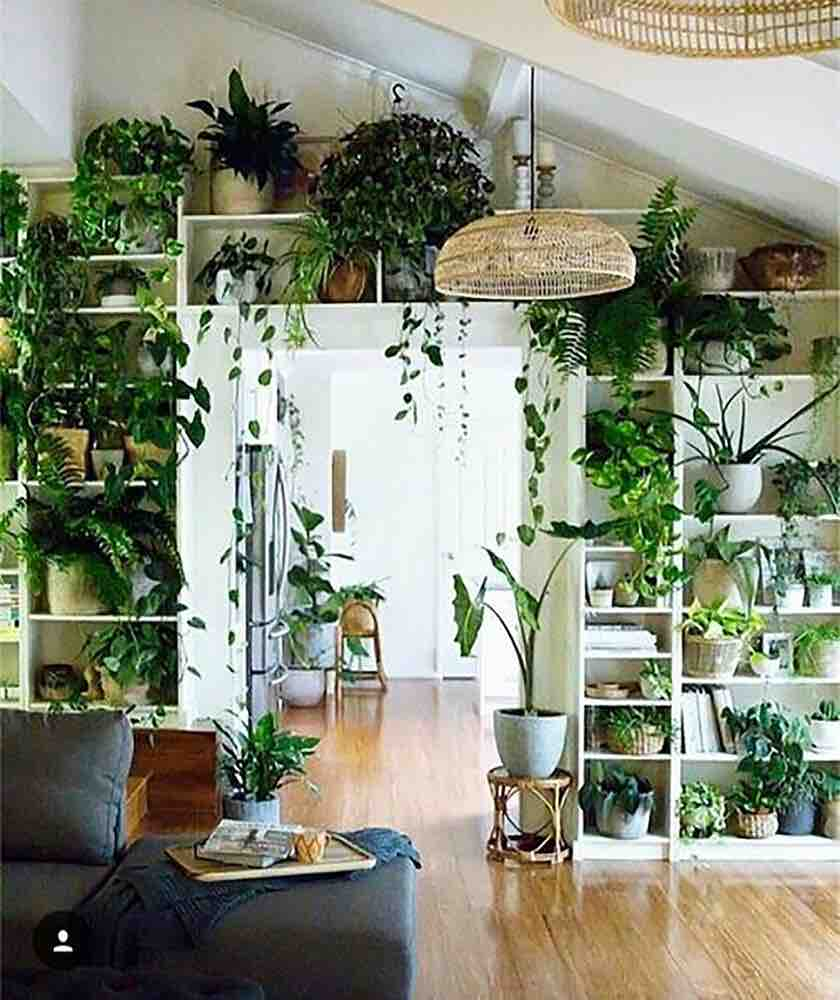

<br>
<h4>Final Project: The Trials, Tribulations and Triumph</h4>
<br>
<h5>Home Garden Hub: Converging on the Idea</h5>
After discussing the different ideas with others, I decided unless I came up with a better idea in the next week, I would spend my time on Pet Sitter and pursue my Cat's Cradle project as a way to learn more about robotic arms. The Plant Sitter is the front-runner because even though there are other solutions out there, there is a lot of range for the project from totally feasible to the ability to take the concept to new heights. There is the opportunity to connect different sensors, deploy different actions and evolve design/useability aspects of set up and monitoring. There could also be a specific personal and niche aspect of the problem which I could extend to in order to make it a unique solution.<br>
<br>
The Sky Roof Transformer would be super cool to bring to reality, but given the state of technology for both glass panels that turns opaque or lights up, I will most probably need to purchase them and perhaps hook them up. As a result, the central essence of this project loses the essence of the digital fabricaton initaitive. I still love the idea of having a Sky Roof Transformer and perhaps what I learn over the course of the 7 weeks will arm me to build this if it is not commercially available in the manner I conceive. <br>
For Plant Sitter project, I wanted to first start with a review of the online resources and the initiatives that came before me.<br>
Based on my research, here are a few videos which also provided great resources and ideas of what I may need for this project. I specifically searched for videos using the Arduino system.
<br>
<ul>
<li><a href="https://circuitdigest.com/microcontroller-projects/automatic-irrigation-system-using-arduino-uno">Circuit Digest (October 6, 2021) "How to Build An Automatic Irrigation System using Arduino Uno". </a> Including this video:
<iframe class="video" src="https://www.youtube.com/embed/iIc67SRn4p0" title="YouTube video player" frameborder="0" allow="accelerometer; autoplay; clipboard-write; encrypted-media; gyroscope; picture-in-picture; web-share" allowfullscreen></iframe>
</li>
<li><a href="https://circuitdigest.com/microcontroller-projects/iot-based-soil-moisture-monitoring-device">Sourav Gupta (April 6, 2022)Low Power IoT Based Compact Soil Moisture Monitoring Device</a>
</li>
<li><a href="https://circuitdigest.com/microcontroller-projects/iot-based-smart-agriculture-moniotring-system">Ashish Choudhary, IoT based Smart Agriculture Monitoring System</a></li>
<li><a href="https://projecthub.arduino.cc/dhruvaV/indoor-plant-watering-b15e8f">Indoor Plant Watering</a></li>
<li><a href="https://www.makerguides.com/automatic-plant-watering-system-with-arduino-iot-cloud/">Automatic plant watering system with Arduino IoT Cloud</a></li>
<li><a href="https://www.instructables.com/How-to-Make-Automatic-Irrigation-System-Using-Ardu/">The Technocrat (April 17, 2019) "How to make Automatic Irrigration System Using Arduino"</a> Materials list and step-by-step instructions are provided here:
<iframe class="video" src="https://www.youtube.com/embed/KWts8QZKIJw" title="YouTube video player" frameborder="0" allow="accelerometer; autoplay; clipboard-write; encrypted-media; gyroscope; picture-in-picture; web-share" allowfullscreen></iframe></li>
<li>BenrBill "Arduino Plant Watering System" https://www.instructables.com/Arduino-Plant-Watering-System/</li>
<li><a href="https://projecthub.arduino.cc/dhruvaV/indoor-plant-watering-b15e8f">Arduino Indoor Plant Watering" (January 13, 2022)</a></li>
<li><a href="https://techatronic.com/automatic-plant-watering-project-using-arduino-arduino-smart-irrigation/">Techatronic "Automatic plant watering project using Arduino" (July 12, 2022)</a></li>
<li><a href="https://www.makerguides.com/automatic-plant-watering-system-with-arduino-iot-cloud/">Makerguides "Automatic plant watering system with Arduino IoT Cloud"</a></li>
<li>Lamsen, F. C., Favi, J. C., & Castillo, B. H. F. (2022). <a href="https://www.paressu.org/online/index.php/aseanmrj/article/view/316">Indoor Gardening with Automatic Irrigation System using Arduino Microcontroller.</a> ASEAN Multidisciplinary Research Journal, 10(1), 131-148. </li>
<li>Hallek, P. (June 19, 2020) <a href="https://medium.com/@patrickhallek1998/automated-smart-home-irrigation-system-9061c391f8e2">How to build an automated DIY irrigation system controlled by an app"</a></li>
<li><a href="https://hackaday.com/2022/07/22/watering-the-garden-with-a-solar-powered-system/">Day, Lewin (July 22, 2022) "Watering the Garden with a Solar-pPowered System"</a></li>
<li><a href="http://www.jatit.org/volumes/Vol100No22/4Vol100No22.pdf">Mousa, S. A. (November 30, 2022) "An Improved Smart Indoor Plant Irrigation System Based on iIoT and Blynk Application"</a></li>
<li><a href="https://www.reddit.com/r/arduino/comments/wp782k/im_making_my_first_serious_arduino_project_an/">Reddit Forum discussion</a></li>
<li><a href="https://www.udemy.com/course/automatic-irrigation-system-with-arduino/">Udemy course.</a>Most interesting here, I thought, is the number of students who have enrolled in it. Clearly there are a lot of folks interested in being able to do this.
<li><a href="https://iotworld.co/2018/07/iot-automatic-plant-watering-system/">Abbas, Mazlan (July 13, 2018) "IoT Automatic Plant Watering System"</a></li>
<br>
<h5>Preliminary List of Physical Components Needed</h5>
Based on reading through these resources, I also started to put together the potential physical components needed. This is so I can start to get an idea of what this project may look like and if there are any major components that I need to think about sooner than later. <br>
<ul>
<li>Microcontroller. Arduino UNO or ESP32.</li>
<li>Soil Moisture Sensors </li>
<li>Temperature Sensors</li>
<li>System output: LCD Display, lights, audio </li>
<li>User input: buttons, switches
<li>Water level Sensor</li>
<li>Water pump, motors, tubing</li>
<li>5V Power Source</li>
<li>NPN Transistors</li>
<li>Resistors </li>
<li>Potentiometer </li>
<li>5mm LED</li>
<li>battery power source</li>
</ul>
<br>
<h5>Evolving the Idea</h5>
Last night, as I was falling asleep with various fragments of what I read or watched squirling in my head, an idea came to me. All the automation of home irrigation systems was about efficiency and solving the problem of going on vacation. But a hypothesis I have is that people don't just have houseplants to be efficient, it is also for fun and the joy of taking care of something else.
Novel idea - plants not just automation but nurturing. Can you still while travelling - garden virtually?
I found a couple of other resources in this direction.<br>
<ul>
<li><a href="https://ellisonchair.tamu.edu/health-and-well-being-benefits-of-plants/#:~:text=Reduce%20Stress.,channel%20their%20stress%20into%20nurturing">Health and well-being benefits of plants</a></li>
<li><a href="https://www.instructables.com/Arduino-Tamagotchi-Clone-Digital-Pet/">Arduino Tamagotchi Clone-Digital Pet</a></li>
<li><a href="https://www.indiegogo.com/projects/lua-the-smart-planter-with-feelings/#/">Lua, the smart planter with feelings!</a></li>
<li><a href="https://www.indiegogo.com/projects/spot-a-smart-plant-pot-that-takes-selfies#/">SPOT - A smart plant pot that takes selfies!</a></li>
</ul>
<br>
<h5>Refining the Concept</h5>
Based on the review of other systems and products out there, I refined the concept to be a home garden system that allows people who don't have the time or the green thumb to be able to have gorgeous garden oasis in their own homes.

<figcaption>A modern indoor garden oasis.</figcaption>
Indoor plants have been shown to improve mental wellness and environmental quality. This home garden system make it easy and possible for people who don't have backyards and those who love plants to have a lush green oasis indoors.
I also want this to be a deeply personal project, so in the end, it must past the "will I use it" test. I want this Home Garden System (HGS) to be something I will actually use to expand my collection of house plants and turn my home into a garden oasis.
Based on this concept, there are key requirements:
<br>
<ul>
<li><strong>Need to make it easy to set up and expand</strong>: I want to make it simple to install into the home and if a plant is removed or added, I want to have this process be seamless. The HGS should make easy so that a garden owner doesn't need think about the trouble they will have to "configure a plant" into their garden, but instead, just feel the joy of adding to the garden. </li>
<li><strong>Joyful</strong>: Just like the book "The Joy of Cooking", I want the HGS to be something that doesn't feel like a technology product, but something that is in the home and makes having an indoor garden more joyful. I want a garden owner to look forward to using the HGS and feel like it is part of the garden experience.</li>
<li><strong>Trusted</strong>: Over time, the home garden should feel like an integral part of the home and thus the HPS will become more "mission critical". I want the system to be robust and not feel or be tenuous in being able to take care of what is now a member of the family.</li>
<li><strong>Shared experience</strong>: I'd like it to be a shared experience with all individuals that live in the family. Instead of the home garden becoming something automated to the point of being a thoughtless part of the environment, I want it to be something that promotes mindfulness and human connection. </li>
</ul>
<br>
<h5>HGS: Different Home Garden System Entities</h5>
<br>
I want to break down this HGS into the various conceptual components.
<h6>Plants and Plant Health</h6>
Let's start with the plant and plant health.
I see each <strong>plant</strong> consisting of profile of information that will make sure it gets the care it needs. This include required amount of water, optimal temperature and humidity, sundlight and nurient levels. There may also be susceptibility to certain types of diseases. May be important to include where the plant was purchased and if it is part of some group of plants within the home.
Plants can be organized into <strong>plant groups</strong> in the home. Either as a single plant such as a large Fiddle Leaf Fig tree or a cluster such as a little cactus garden. Why this may be important is that the water source for plants may be either a 1:1 or 1:many relationship. This may also be true of sensors like light, temperature and humidity where it does not make sense to have multiple sensors on every plant in a given location.
There are also <strong>soil sensors</strong> that are associated with each plant which reports back to a central hub on the latest status of a plant. These sensors I see as a 1:1 relationship with each plant. While the sensor could check on many conditions of the soil, the minimal baseline is moisture. Following this, there could be sensors for temperature, sunlights, pests and visual appearance. I could imagine there could be varying levels of monitoring needed here between a garden-variety monstera versus a rare orchid.
<br>
<h6>Plant Care</h6>
There could be various actions the HGS can take such as dispensing proper nutrients or turning on a light if the plants are not getting enough sunlight. However, foundationally, want to start with water levels as this is the most frequent action that a garden owner would need to take if it were not automated. It is also the main concern if a user is off on travel for more than a week.
From a watering perspective, there are a few modes:
<br>
<ul>
<li> 1. garden owner is notified and goes to plant to do the watering</li>
<li> 2. system check and then dispenses needed water for the plant</li>
</ul>
I could see this be a system-wide option or something that is a hybrid model. Perhaps there is a hanging plant that is quite away from the others. This may be a plant the user may just decided to take care of. On the other hand, if the user is gone for a 3 week vacation, there would be a need to have it fully automated. It does make me reflect on idea that if it is set up for 3 weeks, will the owner just keep it as is and automate it as well?
If the system is to automate watering, then it needs a water source. I see this as a 1:1 or 1:many relationship between each water source (eg. container of water) and the plants. Thus was need <strong>water source</strong> which can be "manual" or "auto". For the "auto" scenario the water source needs to have water levels. I also need to think about how the water gets to each plant. Does a <strong>water pump</strong> feed each plant separately or are multiple connected in a plant group?
<h6>Garden Hub</h6>
Finally, with all these connected entities that take input (sensors) and outputs (actions taken), there needs to be a way for this information to be conveyed to
I, and imagine other garden owners, would not want to go to each plant/sensor to interact with them to control them. Instead, it would be done
<h5>Overall System and Interactions Model</h5>
<br>
<h5>User Model</h5>
<br>
IoT Sensors for Plants and Water
For each of the IoT sensors I needed to ensure it as equiped with the necessary input sensors and also the way to communicate with the central home garden hub. For this, an ESP32-C3 board is used.
Set up this board using these instructions:
https://how2electronics.com/getting-started-with-seeed-xiao-esp32-c3-board/
I used it to ensure I had the dev environment set up properly.
Sensors - using current ot measure resistance
- challenge is moisture but also fertilizer. Also corrosion.
https://www.youtube.com/watch?v=pFQaFnqpOtQ&t=2s
- more or less water, discharge/charge will impact.
Set up an analog read in pin D0 (also A0).
Totally dry readings:
- dry in air: 3165, 3310, 3319, 3311
- submerged into water: 1277,1311, 1294
Translate this moisture into percentage using map(); function.
NOTE - CHECK CAPACITOR INFO and https://makersportal.com/blog/2020/5/26/capacitive-soil-moisture-calibration-with-arduino
Create a soil sensor class and code which would sit on each soil sensor.
Started to work on getting the basic soil moisture sensor unit communicating through ESP NOW with the main Garden Hub microcontroller.
To start, I followed the information here: https://randomnerdtutorials.com/esp-now-two-way-communication-esp32/
- Installed the Adafruit SSD 1306 library. Already had the GFX library.
- Also the BME280 and already had the Unified Sensor Libraries
</div>